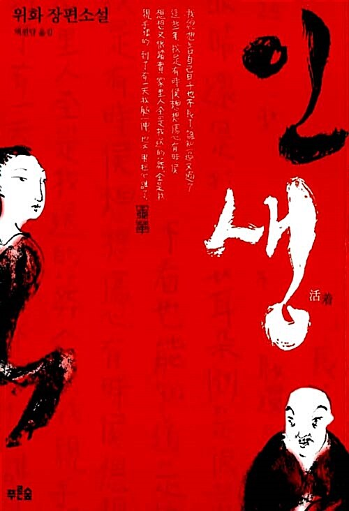

위화의 『인생』
위화의 『인생』을 좋아한다고 말할 때면 잠깐 망설이게 됩니다. 읽는 내내 편안했던 책도, 누군가에게 가볍게 권할 수 있는 책도 아니기에. 그런데도 오래 마음에 남아, 다시 이야기하고 싶어지는 소설입니다.
주인공 푸구이는 재산을 잃고 전쟁을 겪으며, 끝내 가족을 모두 먼저 떠나보냅니다. 노인이 된 그의 곁에 남은 것은 늙은 소 한 마리. 한 사람에게 이렇게 많은 상실이 닥쳐도 되는지, 읽는 동안 슬픔과 함께 답답함이 밀려오곤 했습니다.
푸구이가 가족들과 보낸 시간을 들려주는 대목에서는 그를 바라보는 제 마음도 복잡해졌습니다. 불행했다고만 말하기에는 그 안에 사랑했던 사람들이 있고, 잘 견뎌냈다고 위로하기에는 잃은 것이 너무 많았던 삶. 누군가의 삶을 몇 마디로 정리하는 일이 얼마나 조심스러운지, 책을 덮고도 오래 생각했습니다.
위화 지음 · 백원담 옮김 · 푸른숲. 표지 출처 알라딘